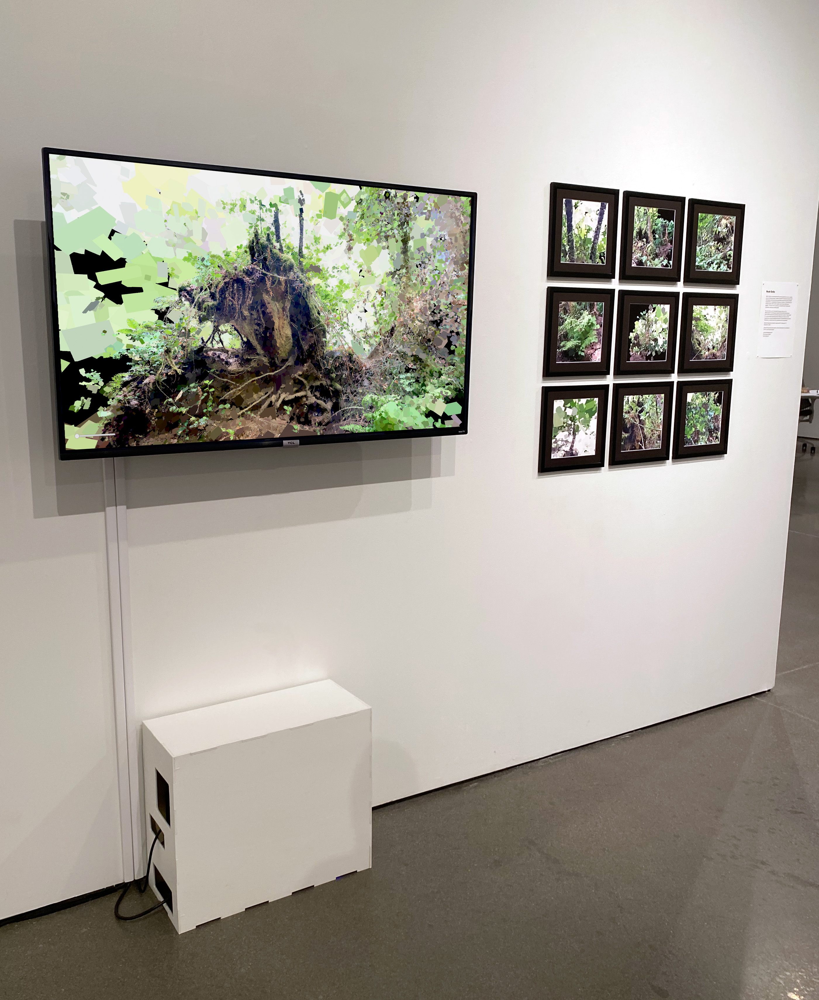

When I think of something that left a strong impression on me, I usually picture it floating in black, isolated. The parts I remember most are vivid and detailed, while everything around them fades into nothing. Radiant Overgrowth is a visualization of that kind of memory, a virtual echo of a strong thought, where certain details remain sharp while others dissolve. The work runs in real-time, a simulation built in Unity that’s constantly moving and shifting views.
The nine prints come from inside that space. Each one is a rephotograph of a photograph, captured from within the simulation, which itself was built from a 3D scan made with a camera. Pulled out of motion and into material form, they sit somewhere between documentation and residue, reminders of a place that’s both constructed and remembered.
